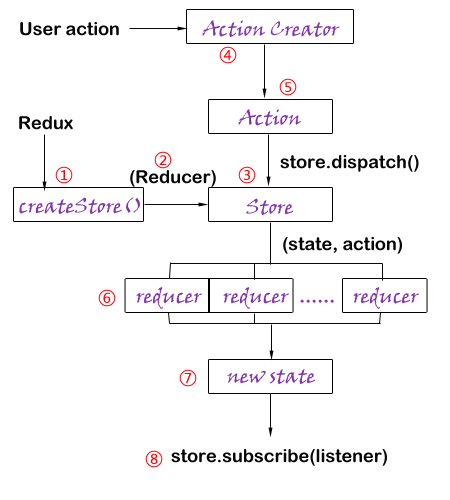

I have seen lots of courses about Redux, only a small number of them that can be worthful, most of them are useless, even made me more confused. So I will write this blog in a different way. What's difference? Introduce the whole construction first! Redux is a technology, but also an idea of how to manage the whole situation. Since it's an idea, we should start with the overall construction and divide it gradually, so that people can understand. All right, let's begin!
1. Why Redux?
If you have already used Reactjs to develope some projects, you will find it has some weakness. It lacks the communication of components which means the "state" attributes cannot be used by parent components. And components' states lack an object to manage, you will find the project would be hard to maintain when the project becomes complex.
But in what situation should we use Redux? Here are some cases:
(1) Multi-user cooperation
(2) Interacting with the server or using WebSocket
(3) Components need to be modified or shared with each other
(4) Components affect global state
2. Whole construction!

(1) createStore():
A whole project has only one "store", which contains all states. And we can use "createStore()" method to create it. This method needs at lease one parameter —— Reducer.
(2) Reducer:
Actually, it's an integral function that acts like an array, which contains all sub reducer functions(No.6 in above picture).
(3) Store:
Contain all states, and it can get old state and return new state.
(4) Action Creator:
A simple function which can create action objects.
(5) Action:
The Store changes state based on different action objects. The action object is just a simple object. Only "type" attribute is required. And you should use "store.dispatch()" method to send an action object to the Store.
The following example explains how above methods work together.
var store = createStore(Reducer);
var action = {
type : "ADD_NUM",
others: [ ]
}
store.dispatch(action);
function Reducer(state, action){
switch(action.type){
case "ADD_NUM" : do something
}
}
(6) reducer:
For different action.type, use different functions.
(7) new state:
When finishing the Reducer function, it will return a new state to the Store.
(8) store.subscribe(listener):
Let Store bind a listening function, and call the function to render the front page as soon as state changes.
Ok, I wll use a simple example to explain how to use them:
var store = createStore(Reducer);
window.addEventListener("load", function(){
var action = {
type : "ADD_NUM"
}
store.dispatch(action);
}, false);
store.subscribe(Render);
function Reducer(state = initialstate, action){
// Assume we already have initialstate
switch(action.type){
case "ADD_NUM": var nowstate = state;
nowtate.num++;
return nowstate;
default: return state;
}
}
function Render(){
var state = store.getState();
this.setState(state);
}
In this example, we bind a "load" event to the window object. And it will trigger "dispatch()" method to send action to Store automatically. And the Store use Reducer function to return a new state, the value of "num" attribute plus 1. Then, because we use "subscribe()" method to bind a Render function, when the state change, the Render function will be triggered, and render the new page.
Ok, this blog only discuss some simple concepts of Redux, and in the next blog, I will write something about Middleware, which is very important to async calls.
(That's all)